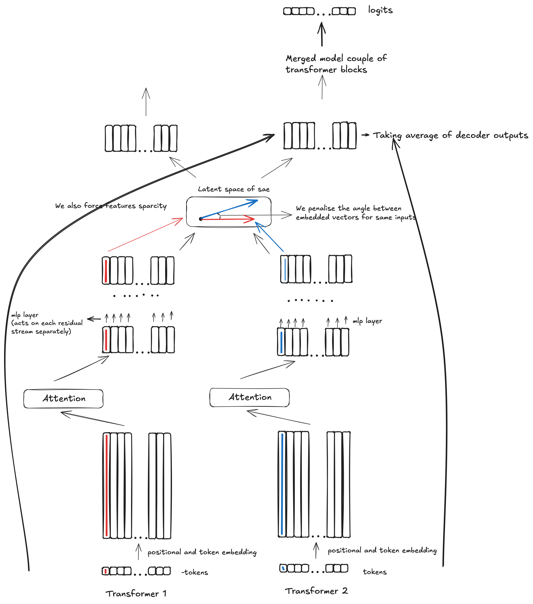

The goal of this section is to showcase how broad and effective the usability of interpretability-related techniques can be.
Our main project is the technique for merging open-source large language models, which is inspired by the "Towards Monosemanticity: Decomposing Language Models With Dictionary Learning" paper by Anthropic. We experimented with the result quite a bit, and it seemed like autoencoders really do unveil superposition efficiently. We thought, why don't we try to use the same large latent space for different autoencoders from different models, penalizing the angle between the same features, hence forcing both autoencoders to put the same features into the same place inside the latent space? We could then pass the output encoder of the first model into the decoder of the second model and sum with the activations of the second model and hope to get better results, assuming the first model has similar features but slightly different circuitry. We would be able to extract a lot of information from both models.
Now, how does it really work in practice? Here is a picture explaining what is going on:
We experimented with the above technique for both classical sparse autoencoders with ReLU activations, as well as with and without bias. We found that bias is quite important, and forcing sparsity with L1 and L2 norms was quite important as well. We also found it more effective to take the average of the decoder outputs when returning to the initial model residual stream. Overall, we were able to merge two GPT-2 architecture models trained on different data and merge them into one model, dropping the loss by 1.45 times!
We were paying close attention to the existing techniques for merging models, and none of those are even close to our result, nor can any of them be scaled. Our technique allows us to merge models of any size, and it is almost certain that we would be able to merge state-of-the-art models and beat some common benchmarks - but at this stage, we would need a reasonable amount of compute in order to train the autoencoder (which is still incomparably less than training a model from scratch).
We again would like to highlight that this is just a project showcasing the usage of interpretability in a real-world task, and we get all the potential benefits of merging state-of-the-art models. We could take models and just maximize raw capabilities. We could take generic open-source models and merge them with coding models, boosting the merged model's coding and reasoning abilities. We could optimize for performance/inference cost tradeoff by distilling the merged model, which is fairly straightforward. Again, we would like to highlight that we were only able to do the above relying to an extent on the hypothesis of model features being represented as directions in the transformer residual stream.
Our immediate plan is to merge larger models, showing we can beat certain well-known benchmarks and making our merged model immediately useful in practice. We would likely then like to invest some time into exploring how interpretability can be used for reducing inference cost and distilling the above model into something lightweight and very capable.